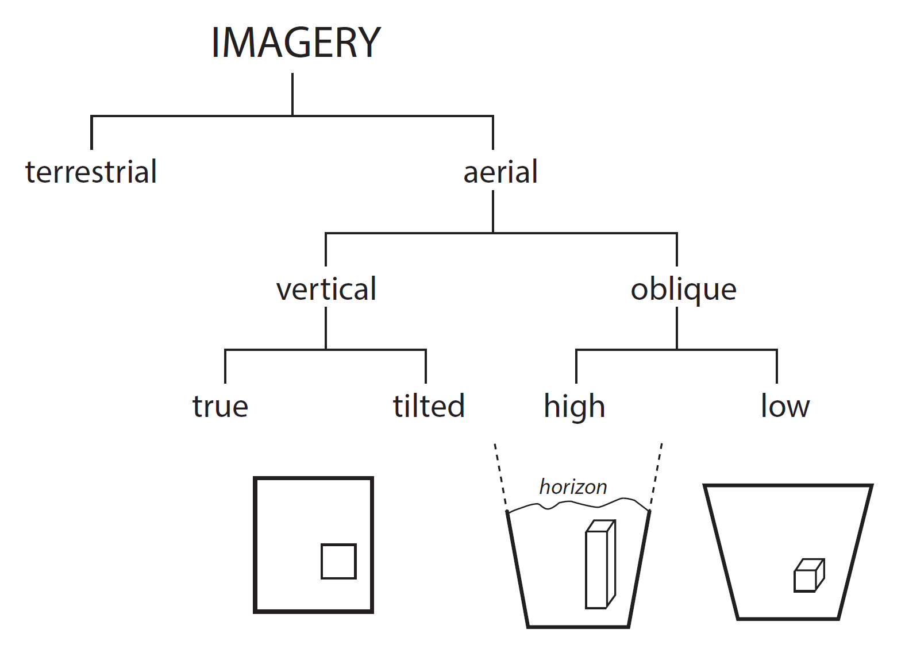
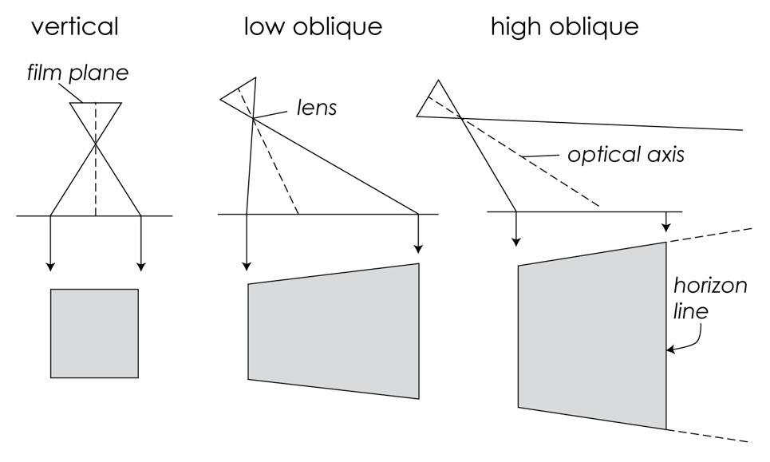

From images to 3D models: Photogrammetry and Structure from Motion concepts
GIS595-004/603; MEA592-006/601:
UAS Mapping for 3D Modeling
Justyna Jeziorska
Center for Geospatial Analytics
North Carolina State University
Objectives
- Understand the crucial role of remote sensing and photogrammetry in Earth Science, especialy in spatial data aquisition
- Use the proper terminology describing photogrammetry concepts understand its meaning (distortion, ortorectification, exterior and interior orientation, focal length, flight lines, side overlap...)
- Describe different types of aerial photography and associated with them challenges for measurements
Objectives
- Understand why photogrammetry needs to be used in order to make mesurements based on aerial photographs
- Describe the process of photogrammetric flight planning
- Understand Structure from Motions concepts in creating 3D models from 2D images
What is Remote Sensing?
- Sensing without contact;
- Gathering data from a distance;
- Fundamental to all sentient life forms;
- Two principle senses – sight and sound;
- Sight and sound have similar physiological and psychological underpinnings.

Psychology of SIGHT
- Sensors (eyes) take input and pass them along to the brain;
- The brain makes the interpretations and connections;

- Stereoscopic vision is amazing brain capability;

happens in the brain;
Remote sensing for mapping explained


Remote sensing, photogrammerty and GIS


Source of diagrams: Schenk (2005), modified
Geometry of aerial photograph


Vertical and oblique aerial imagery


San Francisco Earthquake
Oblique aerial photography from 1906

Photogrammetry
- It is a 3-dimensional coordinate measuring technique that uses PHOTOGRAPHS as the fundamental medium for measurement (the science of taking precise measurements from photographs);
- Can be classified into two types: aerial and terrestrial (close range);
- Aerial Photogrammerty was a cucial development in map making;
Photogrammetric process

Why do we need to process the data?


Why do we need to process the data?


Orthorectification
Process that removes:
- effects of relief displacement,
- optical distortions from the sensor,
- geometric perspective
from a photograph or digital image


The resulting image - an orthophoto or orthoimage.
Orthorectification

Orthorectification

Orthorectification

Orthorectification

Orthorectification

Orthorectification

Orthorectification

Orthophoto
- Photo that has the same lack of distortion as a map (geometrically corrected, uniform scale);
- Can be used to measure true distances

How do we get there?
Old way: analogue

Now: digital


UAS Photogrammetric process
Throughout the whole process, it is important to remember
- What is the aim or the project? and
- What will be the data used for?
Aerial survey


Geoprocessing - workflow

Geoprocessing - workflow

Geoprocessing - workflow

Geoprocessing - workflow

Geoprocessing - workflow

Geoprocessing - workflow

Geoprocessing - workflow

Geoprocessing - workflow

Geoprocessing - workflow

Geoprocessing - workflow

Geoprocessing - workflow

Geoprocessing - workflow

What do we need?
- Digital imagery;
- (Digital elevation model or topographic dataset)
- (Exterior orientation parameters from aerial triangulation or IMU);
- (Camera calibration report);
- (Ground Control Points parameters);
- Photogrammetric processing software that utilizes collinearity equations.
What do we need?
- Digital imagery;
- .
- ..
- .
- .
- Photogrammetric processing software that utilizes collinearity equations.
Multiple-view geometry questions
- Scene geometry (structure):
Given 2D point matches in two or more images, where are the corresponding points in 3D? - Correspondence (stereo matching): Given a point in just one image, how does it constrain the position of the corresponding point in another image?
- Camera geometry (motion): Given a set of corresponding points in two or more images, what are the camera matrices for these views?
Structure from Motion (SfM)
- range imaging technique,
- process of estimating 3D structures from 2D image sequences,
- may be coupled with local motion signals

Structure from Motion (SfM)

Structure from Motion (SfM)

Structure from Motion (SfM)

Structure from Motion (SfM)

Structure from Motion (SfM)

Structure from Motion (SfM)

Structure from Motion (SfM)

Structure from Motion (SfM)

Structure from Motion (SfM)

Structure from Motion (SfM)

Structure from Motion (SfM)

Structure from Motion (SfM)

Structure from Motion (SfM)

Structure from Motion (SfM)

Structure from Motion (SfM)